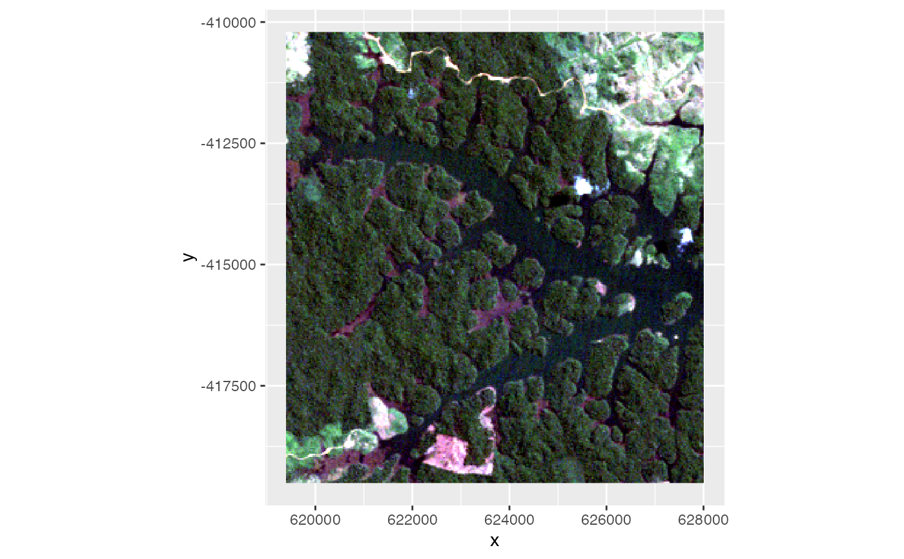
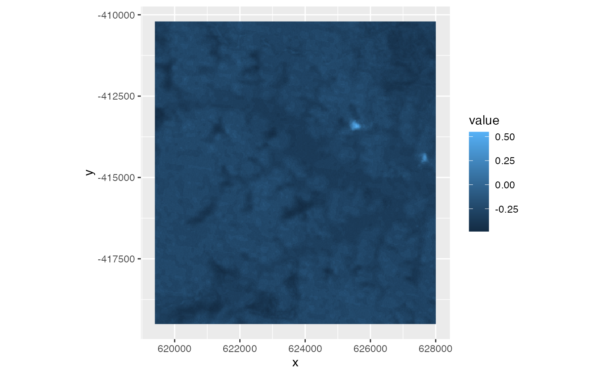
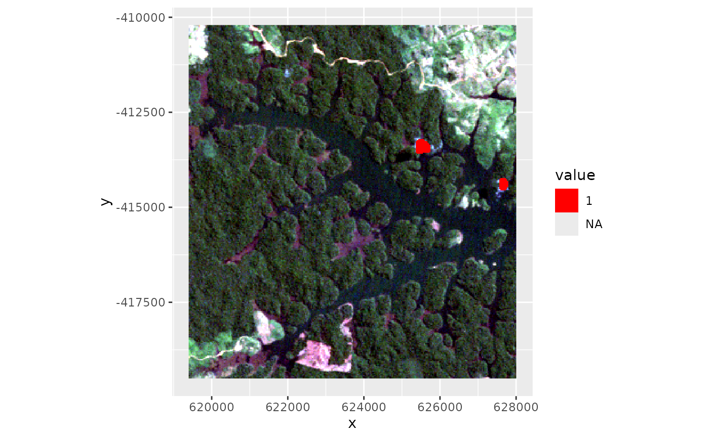
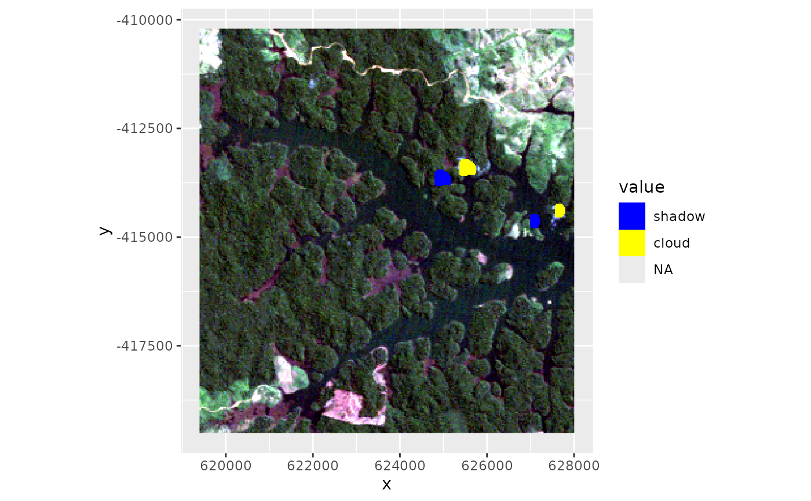

Developed for use with Landsat data cloudMask relies on the distinctive difference between the blue (or any other short-wave band)
and thermal band for semi-automated creation of a cloud mask. Since it relies on thermal information it doesn't work well for sensors without
thermal bands.
Usage
cloudMask(
x,
threshold = 0.2,
blue = "B1_sre",
tir = "B6_sre",
buffer = NULL,
plot = FALSE,
verbose
)Arguments
- x
SpatRaster with reflectance and brightness temperature OR the mask of a previous run of
cloudMaskwithreturnDiffLayer=TRUE.- threshold
Numeric. cloud detection threshold. If not provided it will be guessed. Everything *below* this threshold will be considered a cloud pixel (unless it is removed by filtering afterwards).
- blue
Character or integer. Bandname or number for the blue band
- tir
Character or integer. Bandname or number for the thermal band
- buffer
Integer. Number of pixels to use as a buffer that will be added to the identified cloud centers.
- plot
Logical. Plots of the cloud mask for all sub-steps (sanitizing etc.) Helpful to find proper parametrization.
- verbose
Logical. Print messages or suppress.
Value
Returns a SpatRaster with two layers: CMASK contains the binary cloud mask (1 = cloud, NA = not-cloud) and NDTCI contains the cloud index.
Note
Typically clouds are cold in the thermal region and have high reflectance in short wavelengths (blue). By calculating a normalized difference index between the two bands and thresholding a rough cloud mask can be obtained. Before calculating the spectral cloud index (let's call it Normalized Difference Thermal Cloud Index (NDTCI)) the thermal band will be matched to the same value range as the blue band. Therefore, it doesn't matter whether you provide DN, radiance or brightness temperature.
This approach to cloud masking is very simplistic. And aims only at rough removal of potentially clouded areas. Nevertheless, it is able to provide satisfactory results. More sophisticated approaches, including cloud cast shadow detection can be found elsewhere, e.g. fmask.
It can make sense to find a suitable threshold on a cropped version of the scene. Also make sure you make use of the returnDiffLayer argument to save yourself one processing step.
Buffering should be seen as final polishing, i.e. as long as the pure cloud centers are not detected properly, you might want to turn it off. since it takes some time to calculate.
Once your mask detects obvious cloud pixels properly re-enable buffering for fine tuning if desired. Finally, once a suitable threshold is established re-run cloudMask on the whole scene with this threshold and go get a coffee.
Examples
library(ggplot2)
## Import Landsat example subset
## We have two tiny clouds in the east
ggRGB(lsat, stretch = "lin")

## Calculate cloud index
cldmsk <- cloudMask(lsat, blue = 1, tir = 6)
ggR(cldmsk, 2, geom_raster = TRUE)

## Define threshold (re-use the previously calculated index)
## Everything above the threshold is masked
## In addition we apply a region-growing around the core cloud pixels
cldmsk_final <- cloudMask(cldmsk, threshold = 0.1, buffer = 5)
## Plot cloudmask
ggRGB(lsat, stretch = "lin") +
ggR(cldmsk_final[[1]], ggLayer = TRUE, forceCat = TRUE, geom_raster = TRUE) +
scale_fill_manual(values = c("red"), na.value = NA)
#> Warning: Removed 88752 rows containing missing values or values outside the scale range
#> (`geom_raster()`).

#' ## Estimate cloud shadow displacement
## Interactively (click on cloud pixels and the corresponding shadow pixels)
if (FALSE) shadow <- cloudShadowMask(lsat, cldmsk_final, nc = 2) # \dontrun{}
## Non-interactively. Pre-defined shadow displacement estimate (shiftEstimate)
shadow <- cloudShadowMask(lsat, cldmsk_final, shiftEstimate = c(-16,-6))
## Plot
csmask <- terra::merge(cldmsk_final[[1]], shadow)
ggRGB(lsat, stretch = "lin") +
ggR(csmask, ggLayer = TRUE, forceCat = TRUE, geom_raster = TRUE) +
scale_fill_manual(values = c("blue", "yellow"),
labels = c("shadow", "cloud"), na.value = NA)
#> Warning: Removed 88534 rows containing missing values or values outside the scale range
#> (`geom_raster()`).
